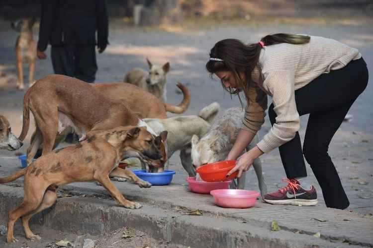

⚠️ Atenção!
A adoção responsável ajuda a garantir uma vida melhor para os animais.
Campanha de Adoção
Nosso projeto de adoção busca encontrar novos lares para animais que precisam de uma família. Incentivamos a adoção responsável e o cuidado com os animais.
Doações
A Acaochego recebe doações para ajudar na alimentação, medicamentos, tratamentos veterinários e outros cuidados necessários para os animais acolhidos.
Voluntariado

Pessoas interessadas podem participar como voluntárias, ajudando nos cuidados com os animais, na organização das campanhas e na divulgação das ações da ONG.